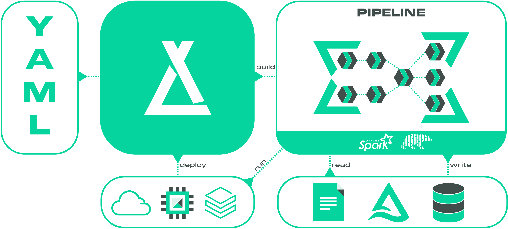
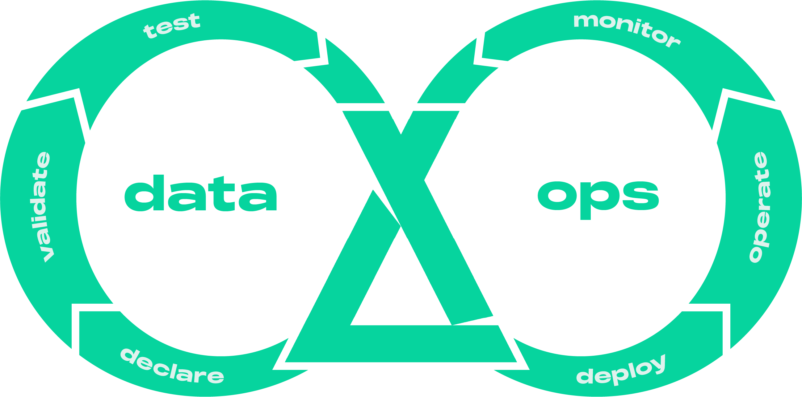

About

An open-source DataOps and dataframe-centric ETL framework for building lakehouses.
What is it?¤
Laktory is your all-in-one solution for defining both data transformations and Databricks resources. Imagine if Terraform, Databricks Asset Bundles, and dbt combined forces—that’s essentially Laktory.
This open-source framework simplifies the creation, deployment, and execution of data pipelines while adhering to essential DevOps practices like version control, code reviews, and CI/CD integration. With Apache Spark and Polars driving its data transformation, Laktory ensures reliable and scalable data processing. Its modular, flexible approach allows you to seamlessly combine SQL statements with DataFrame operations.

Since Laktory pipelines are built on top of Spark and Polars, they can run in any environment that supports python—from your local machine to a Kubernetes cluster. They can also be deployed and orchestrated as Databricks Jobs or Delta Live Tables, offering a simple, fully managed, and low-maintenance solution.
But Laktory goes beyond data pipelines. It empowers you to define and deploy your entire Databricks data platform—from Unity Catalog and access grants to compute and quality monitoring—providing a complete, modern solution for data platform management.
Why Laktory?¤
Laktory is designed to accelerate value generation and reduce the total cost of operations by focusing on four key areas: simplicity, speed, scalability and quality.
Simplicity¤
With Laktory, managing both Databricks resources and data transformations is
streamlined into a single tool. This empowers your data team to take full
ownership of the solution, eliminating the need to juggle multiple technologies.
Say goodbye to relying on external Terraform experts to handle compute, workspace
configuration, and Unity Catalog, while your data engineers and analysts try
to combine Databricks Asset Bundles and dbt to build data pipelines. Laktory
consolidates these functions, simplifying the entire process and reducing
the overall cost.

Speed¤
Adopting a DataOps approach and writing data pipelines as code enables faster, more reliable production releases. With Laktory, you can run and debug your pipelines directly from your favorite IDE before deploying to Databricks, allowing for rapid iteration. With Laktory taking care of read, write and DAG generation, you can concentrate on what matters most—business logic and creating value—while minimizing boilerplate code.

Scalability¤
Scale the right job to the right level. Run on a powerful Spark cluster when dealing with large datasets, or experiment locally on your machine with smaller ones. Switching between environments is effortless with a simple configuration change, ensuring that Laktory adapts to both small and large-scale needs without complexity.
Quality¤
Elevate data quality to a first-class citizen. Laktory integrates robust data quality expectations at both row and aggregate levels, ensuring that only trusted data reaches production analytics. Invalid records can trigger pipline failure, be dropped, or automatically quarantined for later review.
How does it work?¤
Using YAML configuration files, define a stack of resources, such as a data pipelines with SQL-based and Spark-based transformations.
Declare¤
name: slv_stock_prices
source:
path: /Volumes/dev/sources/landing/tables/brz_stock_prices/
sinks:
- schema_name: finance
table_name: slv_stock_prices
transformer:
nodes:
- sql_expr: |
SELECT
data.created_at AS created_at,
data.symbol AS symbol,
data.open AS open,
data.close AS close,
data.high AS high,
data.low AS low,
data.volume AS volume
FROM
{df}
- func_name: drop_duplicates
func_kwargs:
subset:
- symbol
- timestamp
...
Debug¤
Execute your pipline from your IDE using python and a local or remote Spark session.
from laktory import models
with open("pipeline_node.yaml") as fp:
node = models.PipelineNode.model_validate(fp)
node.execute(spark)
node.output_df.laktory.display()
laktory.models.pipelinenode - INFO - Executing pipeline node slv_stock_prices (None)
laktory.models.datasources.filedatasource - INFO - Reading /Volumes/dev/sources/landing/tables/brz_stock_prices/ as static
laktory.models.transformers.basechain - INFO - Executing SPARK chain
laktory.models.transformers.basechain - INFO - Executing SPARK chain node 0 (SparkChainNode).
laktory.models.transformers.sparkchainnode - INFO - DataFrame df as
SELECT
data.created_at AS created_at,
data.symbol AS symbol,
data.open AS open,
data.close AS close,
data.high AS high,
data.low AS low,
data.volume AS volume
FROM
{df}
laktory.models.transformers.basechain - INFO - Executing SPARK chain node 1 (SparkChainNode).
laktory.models.transformers.sparkchainnode - INFO - DataFrame df as drop_duplicates(subset=['symbol', 'created_at'])
laktory.models.datasinks.filedatasink - INFO - Writing df as static DELTA to finance.slv_stock_prices with mode OVERWRITE and options {'mergeSchema': 'false', 'overwriteSchema': 'true'}
+-------------------------+------+------------------+------------------+------------------+------------------+---------+
|created_at |symbol|open |close |high |low |volume |
+-------------------------+------+------------------+------------------+------------------+------------------+---------+
|2023-07-06T11:30:00-04:00|MSFT |338.7200012207031 |341.6199951171875 |341.6600036621094 |338.4200134277344 |2850613.0|
|2023-02-15T13:30:00-05:00|AAPL |154.3800048828125 |155.2321014404297 |155.32550048828125|154.14999389648438|6005631.0|
|2023-02-15T10:30:00-05:00|MSFT |268.0098876953125 |267.9599914550781 |268.6300048828125 |266.5299987792969 |5300365.0|
|2023-10-18T13:30:00-04:00|MSFT |332.7200012207031 |331.54998779296875|332.7200012207031 |330.739990234375 |2036767.0|
|2023-10-19T12:30:00-04:00|AAPL |176.69000244140625|177.47999572753906|177.83999633789062|175.4600067138672 |7575857.0|
|2023-05-16T11:30:00-04:00|AMZN |113.59500122070312|114.4832992553711 |114.48999786376953|113.2750015258789 |8034165.0|
|2023-07-06T10:30:00-04:00|MSFT |340.5799865722656 |338.70001220703125|341.1199951171875 |338.0899963378906 |3748565.0|
|2023-03-30T10:30:00-04:00|GOOGL |100.59500122070312|100.4749984741211 |100.875 |100.24019622802734|3869214.0|
|2023-01-17T15:30:00-05:00|GOOGL |91.55500030517578 |91.30999755859375 |91.61000061035156 |91.23999786376953 |3977790.0|
|2023-03-22T12:30:00-04:00|AMZN |99.94010162353516 |100.193603515625 |100.21659851074219|99.83219909667969 |3250304.0|
+-------------------------+------+------------------+------------------+------------------+------------------+---------+
only showing top 10 rows
Deploy¤
Preview, deploy and run your stack using the CLI
laktory deploy --env dev
laktory run --env dev --job slv_stock_prices

Watch it¤
See it in actions in this introduction video:
Who is it for?¤
Laktory is built by data engineers for data engineers. It does not have visual interface nor allow you to setup pipelines with a few clicks and some drag and drop. On the other hand, if you have minimal DevOps or programming experience, you will be able to efficiently scale, deploying hundreds of datasets and models without compromising data governance. It also provides you with the tools for building a UI within your organization for a fully self-served experience.
Okube¤

Laktory is one of the kubes developed by Okube, a company dedicated to building open source frameworks, empowering businesses to build, deploy and operate highly scalable data platforms and AI models.
Partners¤
Okube and Laktory are official Databricks Technology Partners

Learn more in our Partners sections.